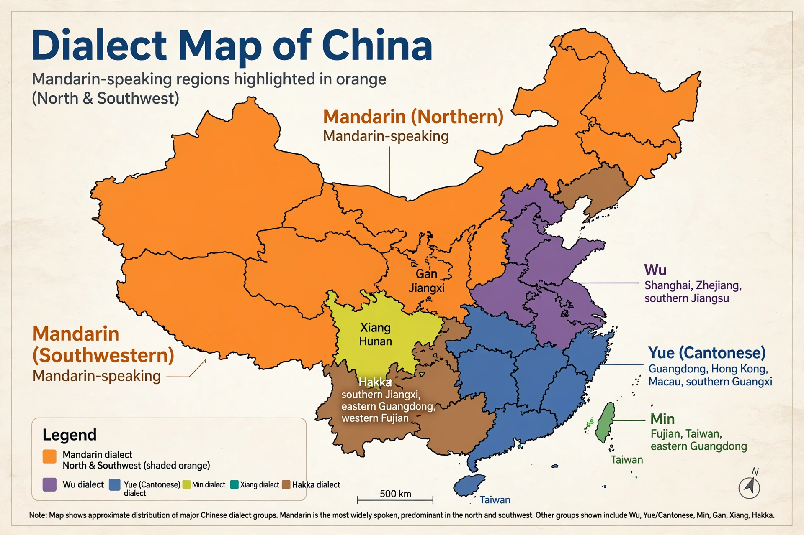

Mandarin Chinese

Native to: northern and southwestern China
Native speakers: c. 940 million
Language family: Sino-Tibetan → Sinitic → Chinese
Standard form: Standard Chinese (Putonghua)
Writing system: Chinese characters (simplified and traditional); pinyin romanisation
Mandarin (官话; literally "officials' speech") is a group of Sinitic dialects native to most of northern and southwestern China, and the most spoken language in the world by number of native speakers, at roughly 940 million. The standard language, Standard Chinese (Putonghua in mainland China, Guoyu in Taiwan), is based on the Beijing dialect and serves as the official language of China, Taiwan and Singapore.
Phonology
Mandarin is a tonal language: Standard Chinese has four main tones plus a neutral tone, so the syllable ma can mean "mother" (mā), "hemp" (má), "horse" (mǎ) or "scold" (mà) depending on pitch contour. Syllable structure is simple, with few consonant clusters and only nasal codas. See Phonetics.
Grammar and writing
Mandarin is an analytic language with little inflection; word order, particles and context carry grammatical meaning. It is written with Chinese characters, standardised in simplified form in mainland China and Singapore and in traditional form in Taiwan, Hong Kong and Macau. The writing system is logographic: each character generally represents a syllable and a morpheme. Hanyu Pinyin, adopted in the 1950s, is the standard romanisation and the usual input method.
See also
Writing system · Language family · Grammar · Spanish language